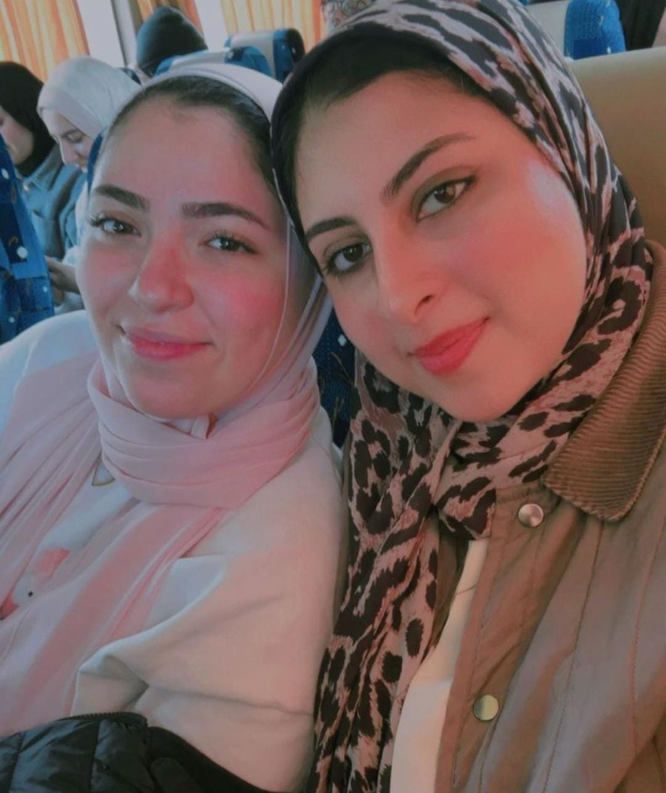
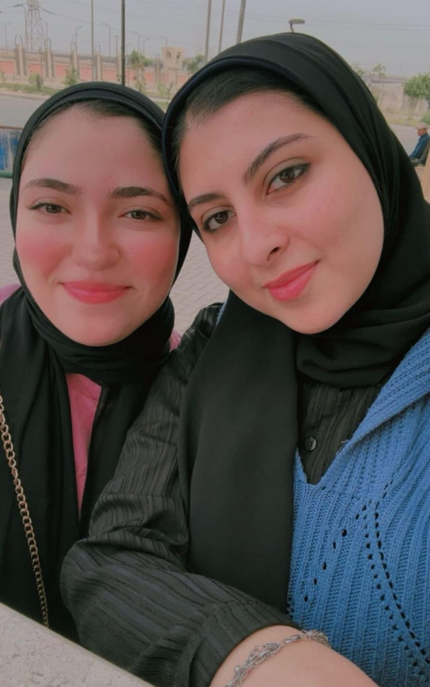
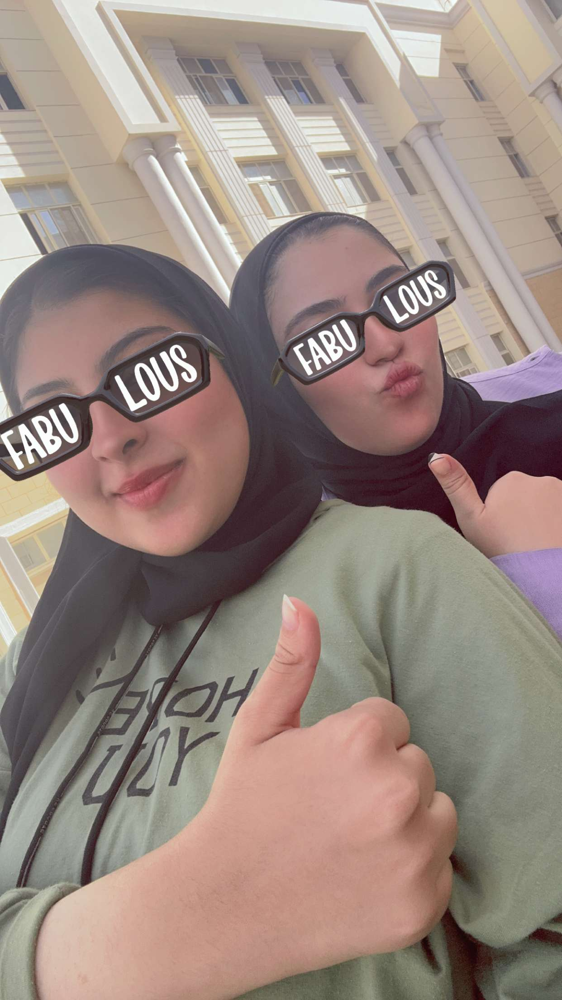
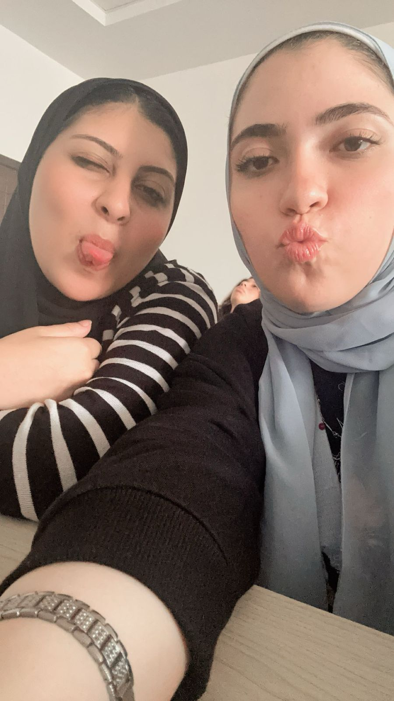
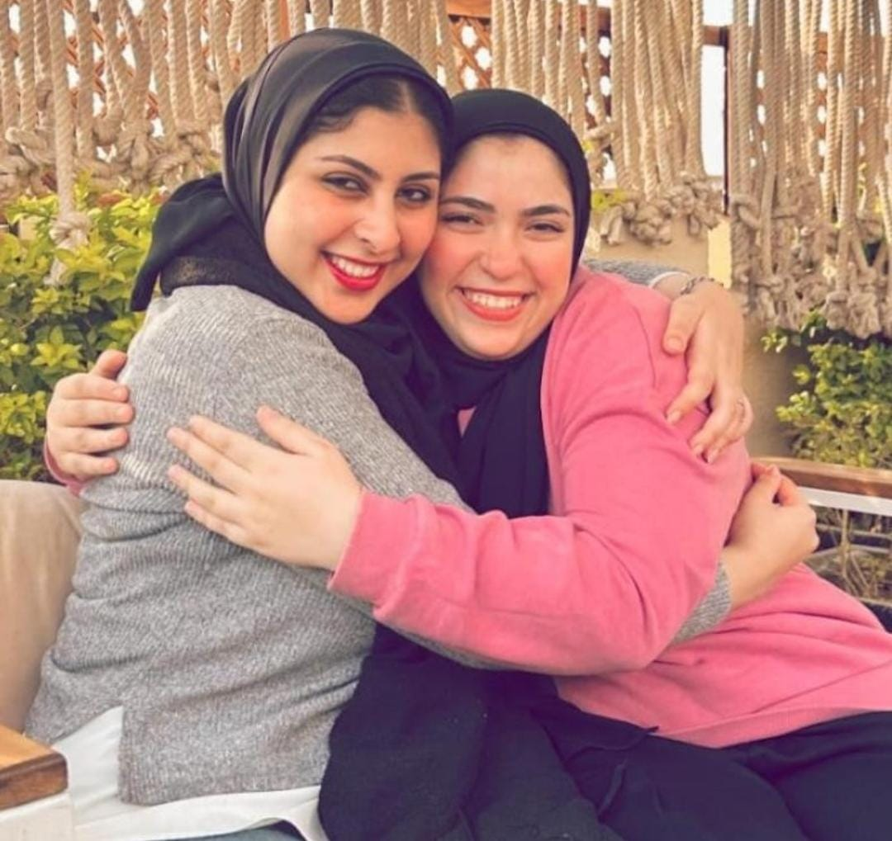

من فلسطين لقلوبنا ... البنوته اللي صوتها وغناها بيهون كل حاجه
THE BEGINNING
نور وضحكة بتدخل أي مكان
يحكي ان في يوم من الايام الدنيا قررت تبتسم وتهدي العالم روح مختلفه مفيش زيها بنوته اسمها "سناء"..وكان باين من اول يوم ان اسمها مش مجرد اسم عادي دي فعلا كانت نور وضحكه بتدخل اي مكان تقلبه بهجه. يحكي ان حكايتها بدات هناك في فلسطين وجمالها وريحتها الطيبه....كبرت طفله شقيه ودمها زي العسل كان دايما حنجرتها غنوة مش عشان تبقي مطربه ولا حاجه لا ده غنا كله هزار ودوشه لذيذة تفرح القلب وكل ما حد يشوفها او يتعامل معاها يلاقي نفسه بيحبها من غير مجهود وكأن ربنا زرع في وشها قبول ملوش اخر.....
FROM PALESTINE WITH LOVEbirthday memory
CHAPTER TWO
رحلة مصر وسنين الجامعة
ودارت الايام ومشت السنين وجاءت سناء لمصر...ومكنتش تعرف ان القدر شايلها هنا حكايه تانيه خالص وان واحده حياتها هتتغير للاحلي بمجرد ما تقابلها. هناك في ممرات بيزنس وسط الدوشه وزحمه المحاضرات والامتحانات اتقابلت سناء بمنة (ملحوظه منة دي انا شايفكم ياللي بتتريقوا علي مجهودي ) ومن اللحظه دي بدات احلي صداقه واجدع اخوه ... سناء مكنتش مجرد صاحبه عاديه دي كانت السند اللي بيهون والضحكه اللي بتطلع فجاة في نص الضغط والتعب عشان تقلب الهم هزار والصوت اللي بيطبطب علي الروح .


THE FRIEND WHO STAYS
في أول صف عينيكي بتلمع
فاكرة كل خطوة عديت بيها ؟عمري ما لفيت وشي الا ولقيتك في اول صف عينيكي بتلمع وفرحانه بيا اكتر من فرحتي بنفسي .. الحقيقه اللي طالعه من قلبي انا عمري ما كنت هوصل لاي حاجه حلوة من غيرك ولا من غير وجودك وسندك ليا طول الطريق .


CHAPTER THREE
كملت سناء 21 سنة...
والنهاردة كملت سناء 21 سنة...كبرت وبقيت احلي واجمل بنت في الدنيا بس لسه محتفظه بنفس روح الطفله اللي جواها لسه بتغني بطريقتها اللي بتموت من الضحك ولسه قلبها ابيض زي ما هو عارفه يسناء؟ انا بجد الحاجه الوحيده اللي كنت هندم عليها لو كنت معرفتكيش انا بحبك اوي ربنا ميحرمنيش منك ابدا يارب. امنيتي ليكي في عيد ميلادك 21 ان ربنا يكتبلك كل الخير كله ويفرح قلبك قد ما بتفرحي كل اللي حواليكي ويارب العمر كله سوا ونكبر ونعجز سوا ويارب تفضلي وسطينا طول العمر ايوا ايوا مكناش هنعرف نخلص الجامعه من غيرك.

THE END?
وهنا خلصت حكايتنا....
توته توته خلصت الحدوته... لكن حكايتنا اللي بجد لسه مخلصتش ان شاء الله .